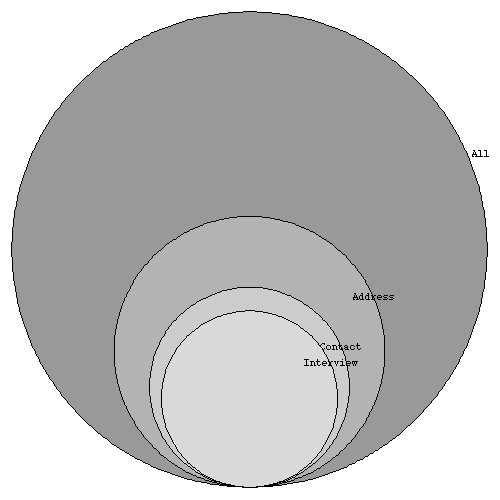
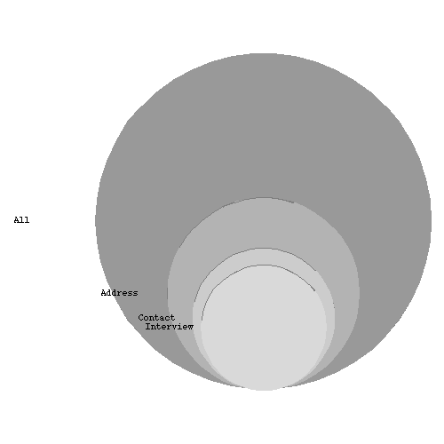

 
We would like to compliment Science on the creative use of graphics in the data presentation in [1]. The statistics community just celebrated the 50th anniversary of the delightful book _How to Lie with Statistics_ [2] with an special issue of Statistical Science [3]. One common practice is to exaggerate differences in size by adding unnecessary dimensions to data displays. Over 100 years ago, Florence Nightingale used this trick productively in changing health care on the battlefield [4]. Although about twice as many people died of disease than battle wounds during the Crimean war, she created a Polar-Area Diagram [5] that made disease-related deaths appear eight times more common.
_The Daily Show with Jon Stewart_ modified this technique to good use--that is towards producing amusing "news". They first presented a typical 3-D bargraph showing a problem with drunk driving [6]. However, the next step was truly inspired. They proceeded to rotate the graph until we were looking straight down on it. Of course, from this angle, the problem disappeared.
Unfortunately, when a similar graph was presented in Science, it appeared to hide information and was probably not intended as humor. The inability to sample a significantly large and random sample of a population is a problem inherent to many sample surveys. In the survey reported, less than 15% of the original population of NIH minority grantees responded. At first glance, the accompanying graph showed a much better rate, as the horizontal width of the disk representing the responder group was only 1/3 as big as that of the population, It was only when the volumes of the disks were considered, an operation involving _pi_r^2, that the accuracy of the graphic became clear. [7] (The caption was accurate.)
We applaud humor in science, but clever graphics should not be used to obfuscate research results.
Citations: